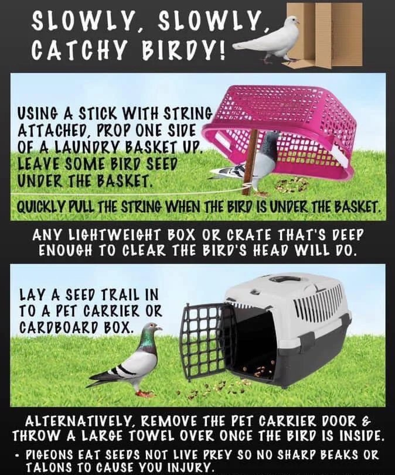

March 11, 2026
Marilynn Walz
Summary
- Figure out if the pigeon is in need. Emaciated, injured or sick pigeons, or babies too small to fly should be captured as soon as possible.
- Capture the pigeon as soon as possible. We cannot help if the bird is still flying free somewhere and cannot waste the resources to drive and find a pigeon.
- Transfer the pigeon to a box or carrier with ventilation with a towel or paper towels within, and place a heating pad on low underneath the carrier or box.
- Contact us as soon as possible. If you are located outside of the Dayton or Cincinnati area, please post to the Palomacy Help Group to find nearby rescuers.
Identifying A Pigeon In Need
The first step to helping rescue a pigeon is to identify if the bird even needs your help in the first place.
A common issue for pigeon rescues, and wildlife rescues in general, is birds being taken into human
care when it was never needed at all.
A pigeon likely needs your help if any of the following apply:

- BEHAVIOR: Most pigeons will fly away when you get too close. If the bird is easy to approach and allows you to touch it, then it's likely in dire need of rescue. Some birds may also show signs of neurological damage, such as twisted necks, inability to balance, and difficulty eating, drinking, or otherwise living a normal life.
- AGE: Note if the bird looks like a fully grown adult, or if the bird is still yellow with baby fuzz. Younger pigeons may be feathered but still look a little different from adults. Most pigeons are fine once they leave the nest: by around four weeks old, they can eat mostly seeds and stay within their parents' flock.
- COLOR: Pigeons that are all white or mostly white may require help. These are often ceremonial release doves, which are actually white pigeons. These birds stand out in the wild and often won't be able to join a flock on their own or take care of themselves.
- INJURY: If the bird is unable to fly, is limping, has stringfoot, or appears to have open injuries, then it needs help.
- BANDED: Bands are often placed on pigeons for identification purposes. Most banded birds you see will be racing pigeons, followed by release doves and pets. Many banded birds may need help, though those that have joined a flock and appear otherwise healthy often do not.
Catching A Pigeon
If you've identified that the pigeon needs help, your next step is to prepare and capture it. If you have time before the catch, prepare a box or carrier with blankets or towels on the bottom for comfort and warmth. Do not be scared of pigeons. Their bites hurt very little, if at all, and most pigeons won't bite or even wing slap you; they'll try to escape instead.
Once you have the pigeon in your hands, hold it securely. Make sure you have a decent grip! Their feet can catch on your skin and hurt a little as they try to push themselves free. You can push the bird into your stomach or chest with one hand, and use your free hand as needed.
- Docile birds or those unable to move can be caught with your hands.
- Birds that allow you to get close can have a towel or shirt thrown over them.
- Use either a crate or a box trap to capture pigeons who are a bit more skittish, but still hungry.

For other methods to catch pigeons, we recommend checking out Palomacy Pigeon & Dove Rescue's article on "How to Catch a Pigeon or Dove in Need of Rescue."
Finally, there are a lot of myths about pigeons, which is why people are often scared of catching them, with the main concern being biosecurity and the risk of catching a disease or illness from pigeons. While some diseases carried by pigeons can be spread to other birds, they are seldom spread to humans. In fact, there were only 176 documented transmissions of illness from feral pigeons to humans between 1941 and 2003 (Haag-Wackernagel, D., & Moch, H., 2004). That's 176 people in 62 years, or ~3 people per year. Additionally, the biggest risk of infection comes from inhaling dust from dried pigeon droppings, especially when cleaning large accumulations. Routine cleaning poses little risk (New York City Department of Health and Mental Hygiene, n.d.).
Temporary Care
All pigeons should be transferred to a rehabilitator with experience caring for pigeons. There, the bird has the best chance of receiving veterinary care and consistent treatment, without accidental harm from inexperienced care. Unless prescribed and told by a vet or rehabber, DO NOT GIVE THE PIGEON ANY SORT OF MEDICATION. Contact the closest rescue to you, or utilize the Palomacy Help Group for Pigeon & Dove Rescue & Adoption. This is an international Facebook group. Include your local area and any information you have about the bird. Many independent rescuers also rehabilitate rock pigeons, not just established rescues.
Keep the pigeon securely in its container in a dark, quiet spot, preferably somewhere warm. You can also use a heating pad on the underside of the container, set on low. Provide a dish of water, preferably somewhat deep. Unlike most birds, pigeons drink by sucking water up through their beaks like a straw, rather than scooping it and tilting their heads back. You can also provide a shallow dish of bird seed. In an emergency, any sort of bird seed works.
Injured or orphaned babies have a different protocol. Do not try to feed the baby yourself. Place a heating pad underneath, but only on one half of the box, so the baby can regulate temperature. Pigeons younger than two weeks old may have difficulty with seeds and water. We recommend calling a wildlife hospital helpline for assistance or following the advice of a pigeon rehabilitator who can aid you more closely with young pigeons.